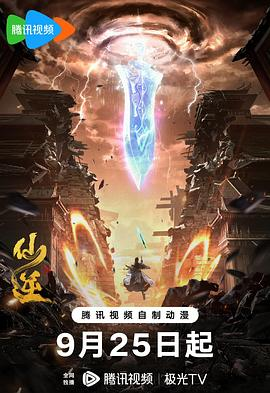
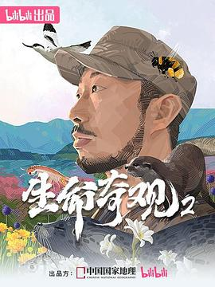
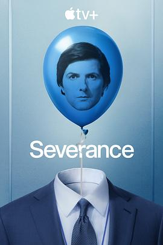

单曲循环与深夜片单，都是生活的注脚。
年度歌单、年度视频与年度短剧，一页收藏。
循环最多的 11 首。点击任意一首即可播放，播放器来自网易云音乐。
时间都留给小宝宝。哄睡之后的碎片时间，就靠这三部续命。

「顺为凡，逆则仙，只在心中一念间。」
修仙题材国漫的天花板。王林的杀伐果断一改主角圣母套路，年番稳定输出，2026 剧场版《弑仙之战》再冲一波热度。

「每一片逆行的鳍，都是对古河床的思念。」
无穷小亮张辰亮全程出镜，内蒙古高原、黄渤海湿地、川西山地走了个遍。主题是「把逆境活成顺境」，科普硬核、解说又好笑，哄娃间隙看一集刚刚好。

"The work is mysterious and important.（工作神秘而重要）"
打工人寓言的终极形态——上班的你和下班的你互不相识。第二季把卢蒙公司的谜团越挖越深，悬疑感与美术依旧顶级。
综合红果短剧热度、全网播放量与话题数据（2026-09），碎片时间电子榨菜，按热度排序。